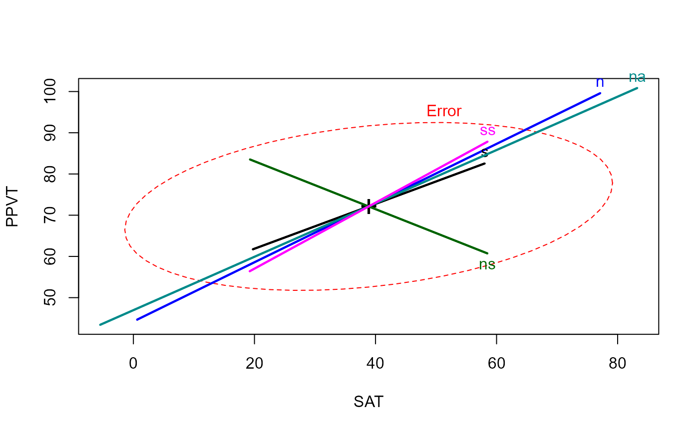
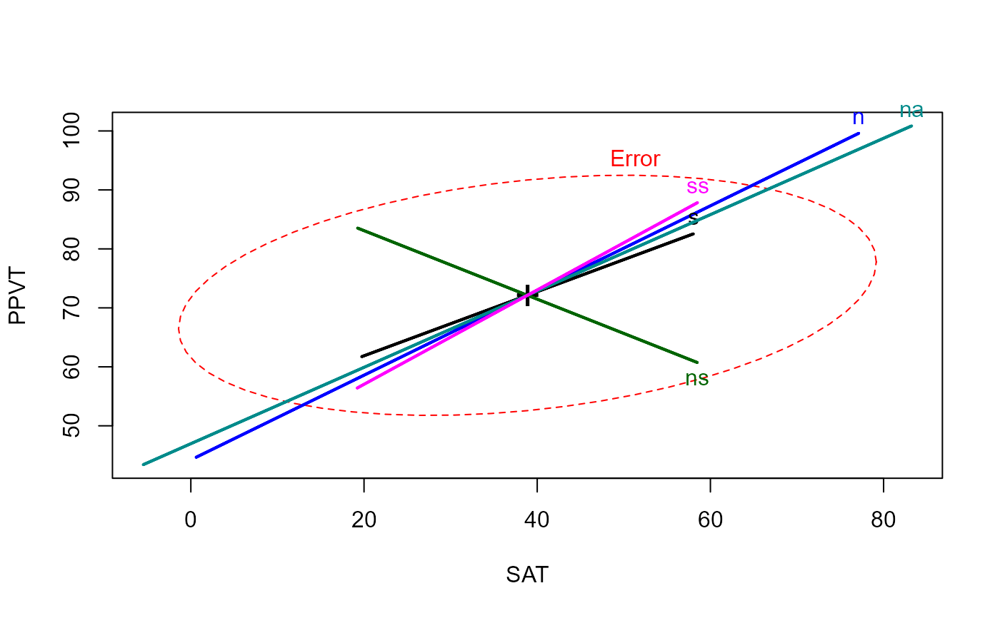

Orthogonalize successive columns of a data frame or matrix
gsorth.Rdgsorth uses sequential, orthogonal projections, as
in the Gram-Schmidt method, to transform a matrix or numeric
columns of a data frame into an uncorrelated set, possibly
retaining the same column means and standard deviations as the original.
In statistical applications, interpretation depends on
the order of the variables orthogonalized.
In multivariate linear models, orthogonalizing the response, Y variables
provides the equivalent of step-down tests, where Y1 is tested alone,
and then Y2.1, Y3.12, etc. can be tested to determine their
additional contributions over the previous response variables.
Similarly, orthogonalizing the model X variables provides the
equivalent of Type I tests, such as provided by anova.
gsorth(y, order, recenter = TRUE, rescale = TRUE, adjnames = TRUE)Arguments
- y
A numeric data frame or matrix
- order
An integer vector specifying the order of and/or a subset of the columns of
yto be orthogonalized. If missing,order=1:pwherep=ncol(y).- recenter
If
TRUE, the result has same column means as original; else means = 0 for cols2:p.- rescale
If
TRUE, the result has same column standard deviations as original; else sd = residual variance for cols2:p- adjnames
If
TRUE, the column names of the result are adjusted to the form Y1, Y2.1, Y3.12, by adding the suffixes '.1', '.12', etc. to the original column names.
Details
The method is equivalent to setting each of columns 2:p to
the residuals from a linear regression of that column on all prior
columns, i.e.,
z[,j] <- resid( lm( z[,j] ~ as.matrix(z[,1:(j-1)]), data=z) )
However, for accuracy and speed the transformation is carried out using the QR decomposition.
Value
Returns a matrix or data frame with uncorrelated columns. Row and column names are copied to the result.
See also
qr,
Examples
GSiris <- gsorth(iris[,1:4])
GSiris <- gsorth(iris, order=1:4) # same, using order
str(GSiris)
#> num [1:150, 1:4] 5.1 4.9 4.7 4.6 5 5.4 4.6 5 4.4 4.9 ...
#> - attr(*, "dimnames")=List of 2
#> ..$ : chr [1:150] "1" "2" "3" "4" ...
#> ..$ : chr [1:4] "Sepal.Length" "Sepal.Width.1" "Petal.Length.12" "Petal.Width.123"
zapsmall(cor(GSiris))
#> Sepal.Length Sepal.Width.1 Petal.Length.12 Petal.Width.123
#> Sepal.Length 1 0 0 0
#> Sepal.Width.1 0 1 0 0
#> Petal.Length.12 0 0 1 0
#> Petal.Width.123 0 0 0 1
colMeans(GSiris)
#> Sepal.Length Sepal.Width.1 Petal.Length.12 Petal.Width.123
#> 5.843333 3.057333 3.758000 1.199333
# sd(GSiris) -- sd(<matrix>) now deprecated
apply(GSiris, 2, sd)
#> Sepal.Length Sepal.Width.1 Petal.Length.12 Petal.Width.123
#> 0.8280661 0.4358663 1.7652982 0.7622377
# orthogonalize Y side
GSiris <- data.frame(gsorth(iris[,1:4]), Species=iris$Species)
iris.mod1 <- lm(as.matrix(GSiris[,1:4]) ~ Species, data=GSiris)
Anova(iris.mod1)
#>
#> Type II MANOVA Tests: Pillai test statistic
#> Df test stat approx F num Df den Df Pr(>F)
#> Species 2 1.1919 53.466 8 290 < 2.2e-16 ***
#> ---
#> Signif. codes: 0 '***' 0.001 '**' 0.01 '*' 0.05 '.' 0.1 ' ' 1
# orthogonalize X side
rohwer.mod <- lm(cbind(SAT, PPVT, Raven) ~ n + s + ns + na + ss, data=Rohwer)
Anova(rohwer.mod)
#>
#> Type II MANOVA Tests: Pillai test statistic
#> Df test stat approx F num Df den Df Pr(>F)
#> n 1 0.059964 1.2970 3 61 0.283582
#> s 1 0.097788 2.2039 3 61 0.096703 .
#> ns 1 0.208820 5.3667 3 61 0.002406 **
#> na 1 0.183478 4.5690 3 61 0.005952 **
#> ss 1 0.091796 2.0552 3 61 0.115521
#> ---
#> Signif. codes: 0 '***' 0.001 '**' 0.01 '*' 0.05 '.' 0.1 ' ' 1
# type I tests for Rohwer data
Rohwer.orth <- cbind(Rohwer[,1:5], gsorth(Rohwer[, c("n", "s", "ns", "na", "ss")], adjnames=FALSE))
rohwer.mod1 <- lm(cbind(SAT, PPVT, Raven) ~ n + s + ns + na + ss, data=Rohwer.orth)
Anova(rohwer.mod1)
#>
#> Type II MANOVA Tests: Pillai test statistic
#> Df test stat approx F num Df den Df Pr(>F)
#> n 1 0.227735 5.9962 3 61 0.001195 **
#> s 1 0.088967 1.9857 3 61 0.125530
#> ns 1 0.112979 2.5898 3 61 0.060939 .
#> na 1 0.302957 8.8375 3 61 5.958e-05 ***
#> ss 1 0.091796 2.0552 3 61 0.115521
#> ---
#> Signif. codes: 0 '***' 0.001 '**' 0.01 '*' 0.05 '.' 0.1 ' ' 1
# compare with anova()
anova(rohwer.mod1)
#> Analysis of Variance Table
#>
#> Df Pillai approx F num Df den Df Pr(>F)
#> (Intercept) 1 0.97665 850.63 3 61 < 2.2e-16 ***
#> n 1 0.22774 6.00 3 61 0.001195 **
#> s 1 0.08897 1.99 3 61 0.125530
#> ns 1 0.11298 2.59 3 61 0.060939 .
#> na 1 0.30296 8.84 3 61 5.958e-05 ***
#> ss 1 0.09180 2.06 3 61 0.115521
#> Residuals 63
#> ---
#> Signif. codes: 0 '***' 0.001 '**' 0.01 '*' 0.05 '.' 0.1 ' ' 1
# compare heplots for original Xs and orthogonalized, Type I
heplot(rohwer.mod)
 heplot(rohwer.mod1)

heplot(rohwer.mod1)
